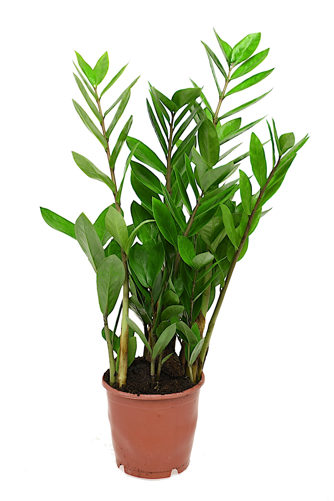

Zamioculcas Zamiifolia
Familie: Araceae
Descriere: Cunoscută și sub numele de „Planta ZZ”, este o plantă de apartament extrem de rezistentă, cu frunze verzi, lucioase și creștere verticală. Este apreciată pentru ușurința în îngrijire și aspectul său elegant.
Îngrijire: Se adaptează la diferite condiții de lumină, dar preferă lumina indirectă. Necesită udare redusă, deoarece poate stoca apă în rădăcini.
Nota: Ideală pentru birouri și spații interioare datorită întreținerii minime necesare.
